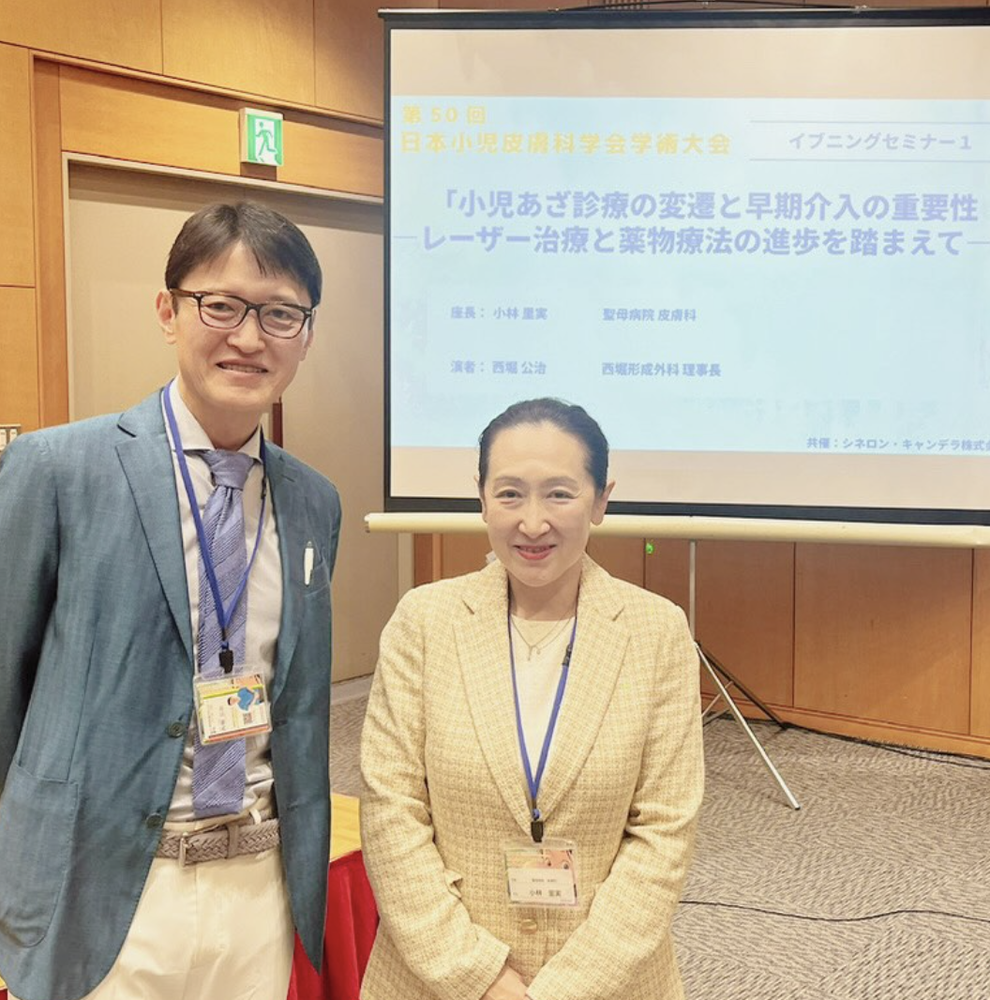

01
PEDIATRIC
BIRTHMARKS
小児あざ治療
乳児血管腫・異所性蒙古斑・ 太田母斑など、小児のあざに 対する診断・治療。


Koji Nishihori, M.D.
形成外科医 / レーザー専門医・指導医
医療法人Creazione-estetica
西堀形成外科 理事長
あざ・レーザー治療を中心に、
臨床・研究・教育を通じて、
より安全で効果的な治療を追求しています。
あざのない、
もっと明るい未来を
すべての子どもたちに。
CLINICAL CARE
RESEARCH
EDUCATION
FOR THE NEXT GENERATION
PROFILE

患者さん一人ひとりに寄り添い、
より良い治療を追求する。
1994年愛知医科大学卒業。 社会保険中京病院形成外科、 愛知医科大学病院形成外科などを経て、 2011年に西堀形成外科を開業。
小児のあざ治療をはじめ、 レーザー治療、形成外科、美容医療など 幅広い診療に携わっています。
日本専門医機構認定
形成外科専門医
日本熱傷学会
認定専門医
日本レーザー医学会
認定専門医・認定指導医
RESEARCH THEMES
小児のあざ治療・レーザー治療を中心に、 AIや遠隔診療など新しい技術を取り入れながら、 より良い診療の実現に取り組んでいます。
01
PEDIATRIC
BIRTHMARKS
乳児血管腫・異所性蒙古斑・ 太田母斑など、小児のあざに 対する診断・治療。
02
LASER MEDICINE
Qスイッチレーザーや ピコレーザーなどを用いた あざ・色素性病変の治療。

03
AI DIAGNOSIS
SUPPORT
あざ・しみ画像を活用した AIによる診断支援技術の 研究・開発。

04
TELEMEDICINE
小児のあざ診療における オンライン診療・遠隔診療の 活用。

ACADEMIC PRESENTATIONS
小児のあざ治療、レーザー医学、AI診断支援などをテーマに、 国内外の学会で研究成果や臨床経験を発表しています。

コラッセふくしま（福島）

滋賀医科大学 リップルテラス（滋賀）

東京慈恵会医科大学 1号館（東京）
LECTURES & SEMINARS

2024.09
議長：河野太郎 講師：西堀公治、さとこ皮膚科・美容クリニック 日景聡子先生、天神竹井皮膚科・美容皮膚科 竹井賢二郎先生、東京大学大学院医学系研究科皮膚科助教 尾松淳先生

2024.03.10
第1部:赤あざ・青あざ治療、脱毛とレーザーフェイシャルの注意点、第2部:ハンズオンセミナー 西堀形成外科 長久手本院

2024.03.03
講演:銀座高須クリニック 高須英津子先生、かすがい皮膚科 春日井一葉先生 TKPガーデンシティ PREMIUM
PUBLICATIONS & BOOKS
これまでに発表した主な論文・著書・分担執筆をご紹介します。
主な論文
西堀公治 ほか
形成外科 69 (6), 628–635, 2026-06-10
西堀公治
日本レーザー医学会誌 45 (1), 17–23, 2024-04-15
中村優, 村木剛, 西堀公治, 山本崇弘, 森上和樹
日本レーザー医学会誌 45 (1), 17–23, 2024-04-15
尾本大輔, 西堀公治
日本レーザー医学会誌 44 (2), 77–82, 2023-07-15
西堀公治, 西堀真依
形成外科 61 (11), 1372–1379, 2018-11
主な著書

BOOK
2025年12月16日 出版
子どものあざを安全かつ効果的に治療できる最新技術！ 子どものあざから、おとなのしみ、ほくろまで、 レーザー治療の仕組みや効果をわかりやすく解説。
Amazonで購入する ↗
BOOK
大人になって後悔しないための
レーザー治療のすすめ
明窓出版 / 2017年12月20日
子どものあざ治療について、早期治療の重要性やあざの種類、 レーザー治療の基礎知識をわかりやすく解説。 豊富な治療経験をもとに、治療を検討する際に 知っておきたいポイントをまとめた一冊。
Amazonで購入する ↗分担執筆
中外医学社 / 脱毛治療 / pp.255–267
特集：とことん、レーザー治療 -シミ・くすみを診る-
医学出版 / フラクショナル1064nm ピコ秒レーザー治療 / pp.87–94
中山書店 / 第3章 しみを治療する 疾患別各論 雀卵斑 / pp.137–148
中外医学社 / 脱毛治療 / pp.247–258
南山堂 / 各論：A 老人性色素斑（日光黒子）、 雀卵斑 / pp.188–194
全日本病院出版会 / 2017年7月
MEDIA & SNS
YouTube・Instagramを通じて、 あざ・レーザー治療に関する情報や、 学会・講演などの活動を発信しています。
LECTURES & SEMINARS
これまでの主な講演・セミナー、ハンズオンセミナーをご紹介します。
ルビーレーザー IB103EX・ルビーフェイシャル
2026.09.27
Nishihori Laser Academy
2026.08.02
enLiGHTen（エンライトン）トレーニング
2026.06.21
Nishihori Laser Academy
2026.05.31
enLiGHTen（エンライトン）トレーニング
2026.05.10
2026.02.15
Nishihori Laser Academy －ピコ秒レーザー完全攻略編－
2026.02.15
大手町三井ホール（東京）
2025.12.07
2025.12.05
マルホ株式会社主催
2025.11.08
2025.07.13
キャンデラ
2025.02.16
ACADEMIC PRESENTATIONS
これまでの主な学会発表・研究発表をご紹介します。
2026.07.25–26｜コラッセふくしま（福島）
西堀公治
日本遠隔医療学会雑誌 21巻3号 Page158（2026.03）
西堀公治、西堀真依、尾本大輔、内山美津希
日本皮膚科学会雑誌 136巻3号 Page293（2026.03）
西堀公治、尾松淳、西堀真依、尾本大輔、内山美津希
日本皮膚科学会雑誌 136巻3号 Page293（2026.03）
2025.11.22–24｜東京慈恵会医科大学 1号館（東京）
2025.11.15–16｜京王プラザホテル（東京）
2025.11.15｜滋賀医科大学 リップルテラス（滋賀）
尾本大輔、西堀公治
日本レーザー医学会誌 46巻3号 Page311（2025.09）
西堀公治、西堀真依、尾本大輔 ほか
日本レーザー医学会誌 46巻3号 Page207（2025.09）
渡邉亮典、西堀公治、古川洋志
日本美容外科学会会報 47巻4号 Page122–123（2025.12）
西堀公治、石川理恵、西堀真依、加藤徳子
Aesthetic Dermatology 35巻2号 Page280（2025.08）
西堀公治、西堀真依、尾本大輔 ほか
日本レーザー医学会誌 45(3): 304, 2024
西堀公治、西堀真依、尾本大輔 ほか
日本レーザー医学会誌 45(3): 325, 2024
西堀公治
第33回日本形成外科学会基礎学術集会 2024年10月18日
西堀公治
第42回日本美容皮膚科学会総会・学術大会 2024年9月1日
西堀公治、西堀真依、尾本大輔 ほか
第67回日本形成外科学会総会・学術集会 2024年4月10日
西堀公治、西堀真依、尾本大輔 ほか
第67回日本形成外科学会総会・学術集会 2024年4月10日
水上麻実、西堀公治
日本レーザー医学会誌 44(3): 250–250, 2023
西堀公治、西堀真依、尾本大輔 ほか
日本レーザー医学会誌 44(3): 254–254, 2023
尾本大輔、西堀公治
日本レーザー医学会誌 44(3): 255–255, 2023
西堀公治、尾本大輔、西堀真依
日本レーザー医学会誌 44(3): 258–258, 2023
西堀公治、西堀真依、鈴木茉友 ほか
日本形成外科学会総会・学術集会抄録 (66): 427–427, 2023
西堀公治
日本レーザー医学会誌 43(3): 185–185, 2022
尾本大輔、西堀公治、西堀真依 ほか
日本レーザー医学会誌 43(3): 193–193, 2022
西堀公治、西堀真依、尾本大輔、鈴木茉友
日本レーザー医学会誌 43(3): 198–198, 2022
西堀公治
日本形成外科学会総会・学術集会抄録 (65): 184–184, 2022
西堀公治、西堀真依、久野鮎子 ほか
日本形成外科学会総会・学術集会抄録 (65): 436–436, 2022
水上麻実、西堀公治
日本レーザー医学会誌 42(3): 158–158, 2021
尾本大輔、西堀公治、西堀真依 ほか
日本レーザー医学会誌 42(3): 166–166, 2021
西堀公治、西堀真依、尾本大輔 ほか
日本レーザー医学会誌 42(3): 166–166, 2021
中村優、高成啓介、伊藤弘幸 ほか／西堀公治
日本形成外科学会総会・学術集会抄録 (64): 272–272, 2021
西堀公治、西堀真依
日本形成外科学会総会・学術集会抄録 (64): 331–331, 2021
西堀公治
日本レーザー医学会誌 41(3): 217–217, 2020
西堀公治
日本形成外科学会総会・学術集会抄録 (63): 144–144, 2020
西堀公治、西堀真依、加藤優子 ほか
日本形成外科学会総会・学術集会抄録 (63): 292–292, 2020
PRESENTATION DATE 学会発表日
AUTHORS 発表者
PUBLICATION 掲載誌
BIBLIOGRAPHIC INFORMATION 掲載情報
PROFILE
CAREER
愛知医科大学卒業
社会保険中京病院形成外科
（医長）
愛知医科大学病院形成外科
（外来医長、助教）
西堀形成外科開業
QUALIFICATIONS